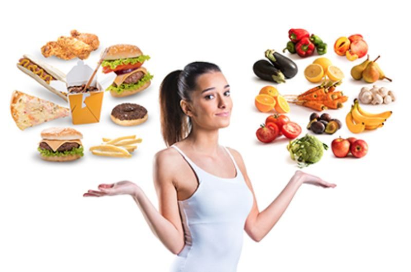

Lower is better

Limit your intake of foods full of saturated fats, trans fats, and dietary cholesterol.
- Best Choice: Omega-3-rich fish, such as salmon, sardines, herring, mackerel, and trout. Choose at least 2 times weekly. If you’re using canned fish, such as canned sardines, select very-low-sodium or no-salt-added varieties.
- Good Choice: Most other fish, plus shelled mollusks (clams, oysters, mussels, scallops).
- Satisfactory Choices: Crustaceans (shrimp, crab, lobster, crawfish), Poultry (white meat, skinless) Game Meat (bison, venison, elk, ostrich), optimally free-range and grass-fed
- Poor Choice: Red meat (beef, pork, lamb, veal, goat). For all red meat choices, select cuts that are under 30% fat.